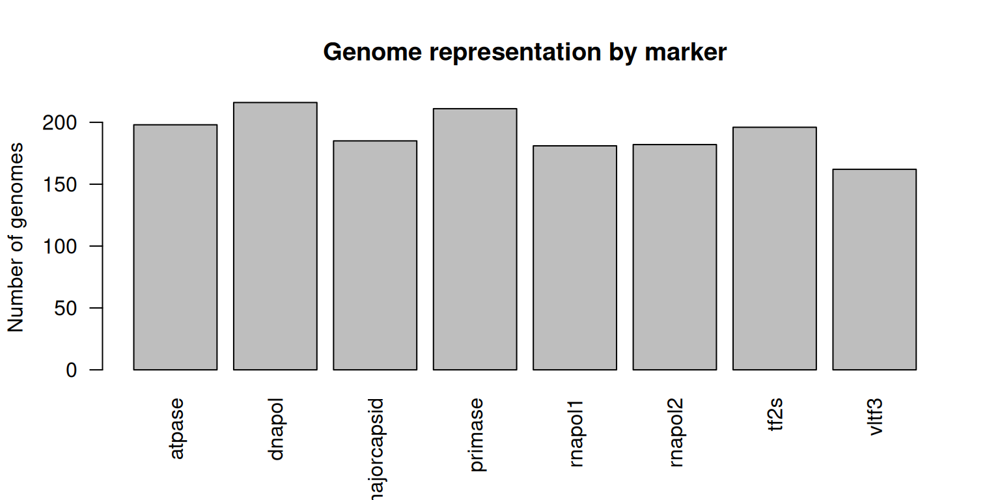
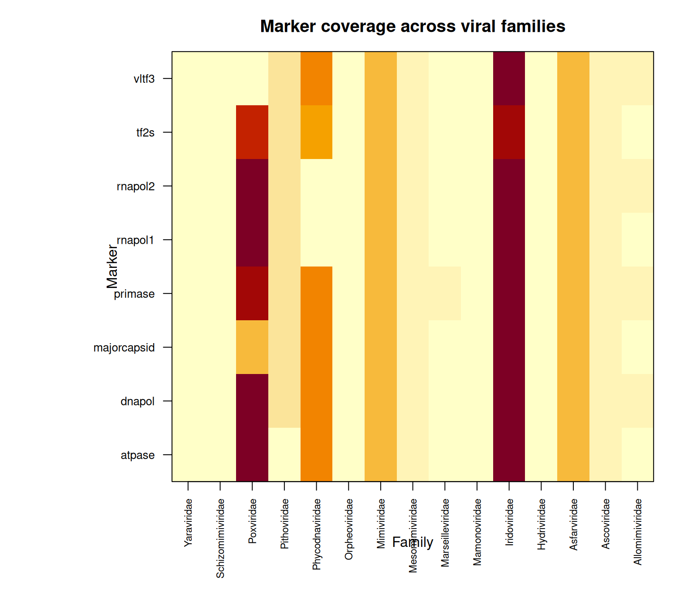
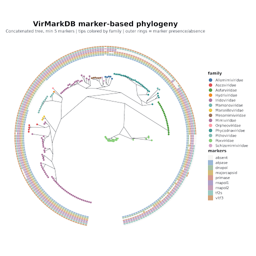

Analyses
This page is the single reference for coverage numbers and figures. For the underlying concepts, see Database; for how the data was generated, see Workflow.
Release summary
8
marker genes
15
viral families
216
maximum genomes for one marker
Genome representation by marker

Coverage heatmap

Marker coverage by family
| Family | atpase | dnapol | majorcapsid | primase | rnapol1 | rnapol2 | tf2s | vltf3 |
|---|---|---|---|---|---|---|---|---|
| Allomimiviridae | 4 | 5 | 3 | 5 | 4 | 5 | 4 | 5 |
| Ascoviridae | 5 | 6 | 6 | 5 | 5 | 5 | 5 | 5 |
| Asfarviridae | 20 | 20 | 20 | 20 | 20 | 20 | 20 | 20 |
| Hydriviridae | 0 | 1 | 1 | 1 | 1 | 1 | 1 | 1 |
| Iridoviridae | 52 | 52 | 55 | 52 | 52 | 52 | 47 | 52 |
| Mamonoviridae | 2 | 2 | 2 | 2 | 0 | 0 | 2 | 2 |
| Marseilleviridae | 4 | 4 | 4 | 5 | 3 | 3 | 4 | 4 |
| Mesomimiviridae | 6 | 6 | 6 | 6 | 6 | 6 | 6 | 6 |
| Mimiviridae | 20 | 20 | 20 | 20 | 20 | 20 | 20 | 20 |
| Orpheoviridae | 0 | 1 | 1 | 1 | 1 | 1 | 1 | 1 |
| Phycodnaviridae | 29 | 30 | 29 | 30 | 1 | 1 | 26 | 29 |
| Pithoviridae | 0 | 13 | 13 | 13 | 13 | 13 | 13 | 13 |
| Poxviridae | 52 | 54 | 21 | 49 | 53 | 53 | 45 | 2 |
| Schizomimiviridae | 2 | 2 | 2 | 2 | 2 | 2 | 2 | 2 |
| Yaraviridae | 2 | 0 | 2 | 0 | 0 | 0 | 0 | 0 |
| Total genomes | 198 | 216 | 185 | 211 | 181 | 182 | 196 | 162 |
Important
Missing values do not automatically indicate true biological absence. They may reflect incomplete genome sequences, marker divergence, ORF prediction limits, or filtering thresholds. See About → Notes and limitations.
Phylogenetic diversity
A phylogenetic tree was generated from a concatenated alignment of the eight marker genes: individual marker alignments produced with MAFFT, trimmed with TrimAl, concatenated, and used for tree inference with IQ-TREE. Only viruses with at least five retained markers were included.
